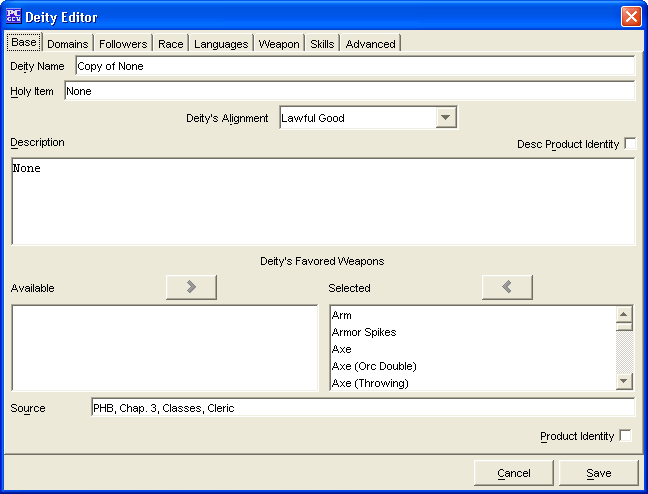

The Base Tab has everything required to make a simple Class. The remaining tabs are for more advanced Class creation. The Classes created will be saved into the data/custom directory under the name of customClasses.lst.
The Deity Name is where you will enter the name for your deity.
The Holy Item is where you will enter the name/description of the holy item for the deity.
The Deities Alignment drop down menu is for selecting the deity alignment.
The Description window is where you will type in a description of the deity (i.e. "God of the Dawn")
The Deity's Favored Weapons windows, Available and Selected are used to create a list of all the favored weapons, primarily for use with the War domain.
The weapon names in the Available window are drawn from whichever sources were loaded into PCGen. (i.e. If you have SRD and Soveriegn Stone loaded as sources, then weapon names from both sources will appear in the window.)
The Add and Remove buttons will move the highlighted weapon between the 2 windows, as will double clicking on a weapon name.
The Source window, is a text window for listing what source material the deity is from. If it is a custom created deity, then you can leave this blank or simply put in "custom"
The Product Identity checkbox is to denote if the deity's name being created is the Product Identity of a publisher
The Cancel and Save buttons, which appear on every tab, are used to either cancel the deity creation or save it to the customdeities.lst file.